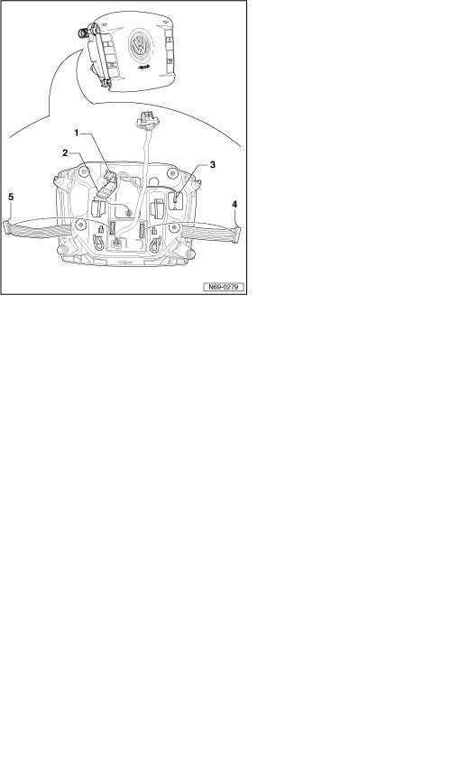
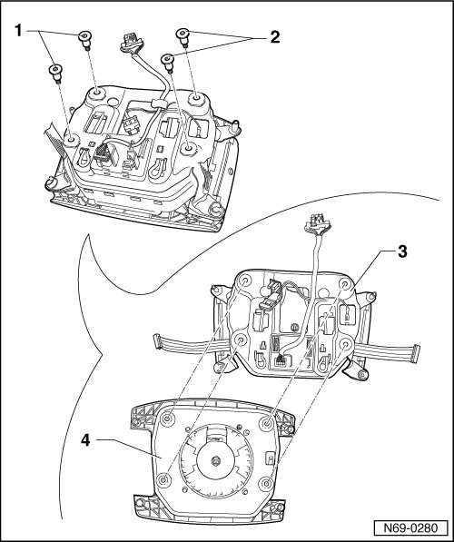

Driver Airbag Mounting Plate
Driver Airbag Mounting Plate
Removing
- Remove driver airbag unit --> [ Driver Airbag ] Driver Airbag
CAUTION!
Electrostatic discharges can lead to an unintended deployment of the airbag. Therefore the technician must discharge static electricity from the body before separating the ignition and ground wiring. This is done e.g. by briefly touching the body or the door striker or pin.
- Release locking tab - 1 - on detonator connector - 2 - and pull detonator connector off airbag unit.
- Remove the ground cable - 3 - from the gas generator.
- Disconnect connectors - 4 - and - 5 -.

- Remove the two bolts - 1 - (0.7 Nm) and - 2 - (0.7 Nm).
- Remove mounting plate - 3 - from airbag unit - 4 -.

Installing
- Perform the steps used for removal in reverse order.